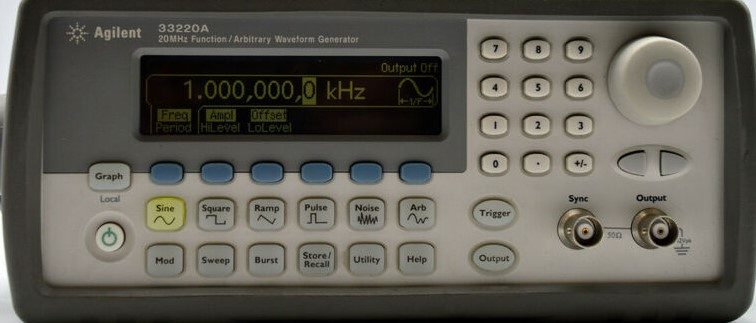

מחולל אותות (Function Generator) הוא מכשיר עזר אלקטרוני המייצר אותות מתח מחזוריים (כמו סינוס, ריבוע, משולש, פולסים ורעש). תפקידו לדמות אותות כניסה למעגלים נבדקים (כמו רמקולים, מסננים, מגברים ומעגלים דיגיטליים).
דגם ה-Agilent 33220A הוא מחולל דיגיטלי מתקדם בטכנולוגיית DDS (Direct Digital Synthesis) המאפשר יציבות תדר גבוהה במיוחד (עד \(20\text{ MHz}\)), שליטה מדויקת באמפליטודה, קביעת רמת היסט (DC Offset) ויצירת אותות שרירותיים (Arbitrary Waves) מותאמים אישית.
באיור משמאל מוצג מחולל האותות Agilent 33220A. שימו לב למסך הגרפי הברור המציג את צורת הגל, את התדר ואת המתחים. בחלק הימני נמצאים לחצני הניווט, בורר סיבובי ומקשי היחידות, ובפינה הימנית התחתונה נמצאים הדקי ה-BNC המפיקים את האות.

מחולל האותות הדיגיטלי Agilent 33220A
הבעיה הנפוצה ביותר של סטודנטים במעבדה היא: "למה כיוונתי את המחולל ל-\(1\text{ V}_{p-p}\) אבל באוסילוסקופ אני רואה בדיוק \(2\text{ V}_{p-p}\)?"
למחולל האותות יש התנגדות פנימית (עכבת מוצא) מובנית של \(50\ \Omega\). מעגל התמורה החשמלי הבא מסביר את תופעת חלוקת המתח:
לוח המקשים של ה-Agilent 33220A נוח וברור. להלן השלבים לקביעת אות עבודה במעבדה:
בחרו את צורת הגל הרצויה על ידי לחיצה על אחד ממקשי המעטפת השמאליים: Sine (סינוס), Square (ריבוע), Triangle (משולש), Pulse (דופק), או Noise (רעש).
לחצו על מקש ה-Softkey שמתחת למסך התואם לכיתוב Freq. השתמשו בלוח המקשים הנומרי כדי להקיש את התדר הרצוי, ובחרו את היחידות המתאימות מתפריט הלחצנים (Hz, kHz, MHz).
לחצו על לחצן Ampl להגדרת המתח משיא לשיא (\(\text{V}_{p-p}\)). לחצו על Offset במידה ונדרש להוסיף רמת DC לאות (למשל, כדי להרים את אות הסינוס כולו מעל האפס למתח חיובי בלבד).
כדי להימנע משגיאת "המתח הכפול", כוונו את עכבת המכשיר:
לחצו על לחצן Utility > בחרו ב-Output Setup > בחרו ב-Load > שנו את ההגדרה מ-\(50\ \Omega\) ל-High-Z (במידה ואתם מודדים עם אוסילוסקופ בלבד).
חשוב מאוד: כברירת מחדל בטיחותית, מוצא המכשיר מנותק. על מנת להזרים את האות למעגל, עליכם ללחוץ על לחצן Output. האור בלחצן יידלק בירוק, ומסמל שהאות זורם כעת מהדק ה-BNC למעגל שלכם.
בפנל הקדמי של המכשיר קיימים שני חיבורי BNC מעגליים:
בניסוי זה נשתמש במחולל האותות Agilent 33220A כמקור מתח חילופין סינוסי כדי לבדוק כיצד מסנן RC מנחית תדרים גבוהים. נמדוד את מתח המוצא על פני הקבל באוסילוסקופ.